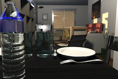
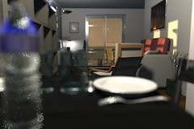
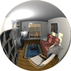
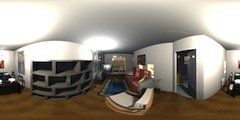
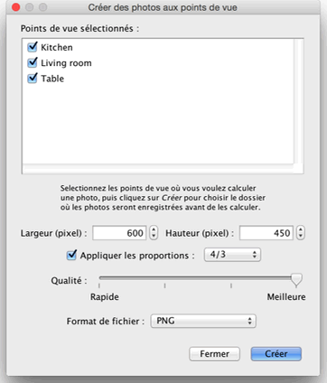

Aux deux meilleurs niveaux de qualités, l'image calculée
dépend de la position et la puissance des lumières. Par
défaut, l'image est calculée à midi avec des lumières
supplémentaires placées automatiquement au plafond de
chaque pièce. Si vous voulez
mieux contrôler les sources lumineuses dans votre logement, décochez
éventuellement la boîte à cocher Ajouter des plafonniers,
ajoutez des objets de la catégorie Lumières
dans le plan et régler leur puissance avec leur indicateur de
puissance ou en éditant leurs
valeurs. La luminosité du soleil, sa couleur et la direction
de ses rayons dépendent de l'heure et de la date choisies, mais
aussi de la direction du Nord, de la position géographique et
du fuseau horaire, ces derniers paramètres étant gérés
par le panneau de la boussole. La
luminosité globale de l'image dépend aussi du niveau de
l'intensité lumineuse choisie dans le panneau de modification
de la vue 3D.
Pour terminer, le panneau Créer une photo vous permet
de sélectionner l'objectif à utiliser parmi les 4 suivants.
|  |
|
 |
Objectif par Défaut
|
Objectif Profondeur de champ |
|  |
|
 |
| Objectif Fisheye |
Objectif Sphérique |
Si vous voulez calculer un ensemble de photos en une seule tâche, enregistrez les points de vue auxquels vous vous intéressez avec le menu Vue 3D view > Enregistrer le point de vue... puis choisissez le menu Vue 3D > Créer des photos aux points de vue.... Ce menu affichera une boîte de dialogue vous permettant de choisir la taille, la qualité et le fomat de fichier des photos, avant de les calculer et les enregistrer dans le dossier de votre choix. Aux deux meilleurs niveaux de qualité, la date/heure et l'objectif utilisés à un point de vue donné seront les valeurs que vous avez saisies précédemment dans le panneau de création de photo, au moment de l'enregistrement de ce point de vue.

|